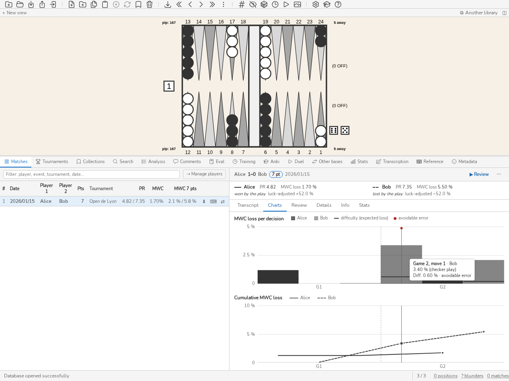

マッチと記譜
マッチパネル
マッチ パネル（CTRL-Tab）はインポートしたマッチを一覧表示します。マッチをダブルクリックする（または Enter を押す）と、その手を辿ることができます。m コマンドは最後に閲覧したマッチのナビゲーションを再開します。
パネル上部のフィルタ欄(/ で移動、Esc でクリア)は、プレイヤー、イベント、会場、トーナメント、日付のいずれかが入力したテキストを含むマッチだけを残します。フィルタと列の並べ替えはデータベースが行い、リストはスクロールに応じてページ単位で読み込まれ、「n / N マッチ」のカウンタが読み込み済みの割合を示します。リスト内でプレイヤー、日付、トーナメントを修正すると、編集した行だけが更新されます。
リストが空のとき、パネルは インポート… (Ctrl+I) を提案します。データベースが開かれていない場合は代わりに データベースを開く… を、ウェルカム画面に戻る とともに提案します。テキストフィルターがリストを空にした場合は フィルターを解除 を提案します。空の Stats、コレクション、Anki パネルにも同じボタンが表示されます。
ユーザーは次のことができます：
左 キーと 右 キーを使ってマッチの手を辿る、
PageUp キーと PageDown キーを使ってゲーム間を移動する、
CTRL-L を押して手の分析（チェッカーとキューブ）を表示する、
d キーでチェッカーの手の分析とキューブの分析を切り替える、
分析の中で実際にプレイされた手が強調表示されているのを確認する、
ssコマンドでマッチのポジションの中を検索する（例：ss E>80）。その後 Esc で検討中の手に戻ります（ 検索パネル を参照）。
各マッチで最後に閲覧したポジションは記憶され、自動的に復元されます。パネルを表示または非表示にするには、CTRL-Tab を押すか match コマンドを実行します。
行の⊕ボタンは、そのマッチをファイルから補完します。裏で新しいことは何も起きていません。同じマッチを別の形式で取り込み直せば、すでにその場で補完されるからです。正準ハッシュが同じマッチだと認識し、二つめのファイルの解析やコメントが最初のものを補います。ボタンがもたらすのは「見つかること」です。取り込みが補完でもあるとは、誰も推測しません。続く報告が、どちらが起きたかを述べます——「取り込み：1」ではなく「補完：1」と。
各マッチは、マッチ一覧の ⬇ ボタン、またはマッチのシートの ⋯ メニューにある .mat をエクスポート から、Jellyfish 形式の .mat 記譜としてエクスポートできます。
マッチをクリックすると、そのシートが開きます。ヘッダーの1行には、プレイヤー、最終スコア(勝者は太字で、名前はポインターを合わせると表示)、長さ、持ち時間設定(ある場合)、日付が並び、トーナメント、ラウンド、会場はポインターを合わせると表示されます。右側には、動画のあるマッチの 🎞 アイコン、レビューボタン、そして .mat をエクスポート、記譜を編集、マッチを削除 を収めた ⋯ メニューがあります。続いて、マッチの総括 の要約が置かれ、その下にタブバーが並びます。棋譜(ゲームごとに手を一覧し、手をクリックするとそこへレビューが移ります)、グラフ、見直し、詳細、情報、統計です。選んだタブはパネルの残りの高さをすべて使って単独でスクロールし、ヘッダーと要約はその場に残ります。タブにフォーカスがあるときは、左右の矢印キーで前後のタブに移ります。開いたままにしたタブは次のマッチでも開いたままです。内容のないタブは表示されません。分析のないマッチには見直しも詳細もなく、損失も所要時間も分からないマッチにはグラフがありません。


マッチのシート：ヘッダー、プレイヤーごとの総括の要約、そしてグラフタブ。ポインターを合わせた判断が見えています。
記譜の各手には、その重大度が付きます。エラーには?、ブランダーには??、行の余白に色付きの線、そして印にポインターを重ねるとその手のコストがエクイティで表示されます。しきい値はデータベース自身のもの (設定) で、統計が数えるのと同じものです。手は実際に指されたとおりに判定されます。マッチ内で同じ局面が二度指されれば、二つの判定を受けます。解析が評価しない手には印が付きません。
各ゲームの見出しは、展開されているかどうかにかかわらず、その印を数えます。開かなくても、どのゲームにブランダーがあるかがわかります。カウントをクリックすると、それらのポジションが分析パネルに読み込まれます。
マッチが分析済みの場合、記譜には MWC 列が加わります。これは判断が失わせたマッチの勝率をパーセントで示したもので、損失のない判断は 0、分析が採点しない判断や、スコアがマッチのエクイティ表に値を持たない判断(マネーゲーム、統計対象外の判断)はダッシュになります。MWC の見出しをクリックすると、各ゲームの手が損失の大きい順、小さい順、マッチの順の順に切り替わります。採点されない判断は最後に置かれ、この並べ替えは所要時間による並べ替えに代わります。グラフタブには、所要時間のグラフと同じ判断の軸の上に、全幅の二つのグラフが並びます。一つは判断ごとの棒、もう一つは各プレイヤーの累積損失で、その合計で止まります(最初のプレイヤーは実線、二人目は点線)。各グラフにはタイトル、凡例、左側の目盛りがあり、軸の下に各ゲームの番号(第1局、第2局…)が示され、点線がゲームの切れ目を表します。採点されない判断には、棒の根元に高さのない小さな目印が付きます。判断にポインターを合わせるか、矢印キーで順に移動する(Home キーと End キーで両端へ移動)と、その判断がすべてのグラフと記譜の該当行で強調され、ゲーム、手、プレイヤー、損失がツールチップに表示されます。ツールチップは、グラフの枠内に全体が収まる側に置かれ、幅の狭いパネルでも同様です。クリックまたは Enter キーでレビューがそこに移動します。所要時間のグラフでも同様です。各グラフの凡例では、各プレイヤーの名前がチェックボックスになっています（キーボードでもマウスでも操作できます）。チェックを外すと、そのプレイヤーの印が3つのグラフすべてから消えます（設定は共通です）。ホバー、クリック、矢印キーは、もう一方のプレイヤーの判断にのみ作用します（クリックは最も近い表示中の判断を選びます）。最後にチェックされているプレイヤーは外せず、どのマッチも両プレイヤーにチェックが入った状態で開きます。インターフェースの外では、match --format json が decision_losses を追加し(手ごとに一つの項目で、採点されない手では mwc_loss が null)、--format text は採点された手ごとに「MWC loss」の行を、--format summary はプレイヤーごとの合計を追加します。
難度と避けられたミス。 損失は手がいくら損をしたかを示しますが、正しい手を見つけるのが難しかったかどうかは示しません。MWC の隣の 難度 列は、決定の難度を示します。同じ局面で基準プレイヤーが平均して被るマッチ勝率の損失です。この基準プレイヤーは完璧には指しません。各選択肢を、コストが高いほど低い確率で選びます。π(i) は exp(−Δᵢ/τ) に比例し、Δᵢ は最善手に対する選択肢 i のコストで、正規化エクイティで表します。難度は d = Σ π(i)·Δᵢ で、損失と同様に決定時のスコアとキューブで MWC に換算します。つまり同じ単位、マッチ勝率のパーセントで表されます。選択肢は、チェッカープレイでは分析の候補手、キューブを持つ側ではノーダブルとダブル(最善の応手に対して)、ダブルを受ける側ではテイクとパスです。温度 τ は 0,025 です。2 択で最も難しい決定は差が約 0,032 のもので、0,01 間隔の候補が 5 つある局面は、PR 約 6 のプレイヤーの平均的なミスに相当します。これは強いプレイヤーを想定した事前値で、結果を調べる前に固定されています。
読み方。明白な決定や強制された決定の難度は、特別な閾値で区別しなくても0に近くなり、数千分の一の差に複数の選択肢が並ぶ接戦の決定では大きくなります。難度を大きく上回る損失は、局面では言い訳のできないミスです。難度に近い損失は、良いプレイヤーでも犯すミスです。損失がデータベースのミス閾値に達し、かつ難度がその 10 分の 1 を超えない決定は避けられたミスで、損失の横の!とバーの上の点で示されます。2 択の決定なら、基準プレイヤーは 10 回に 1 回もそのミスをしません。決定ごとのグラフでは、難度は各バー上の横線で表されます。線をはるかに超えて伸びるバーは、避けられたミスを示します。
詳細タブの表は、各プレイヤーについて、MWC 損失の合計(マッチ一覧と同じ値)と採点された判断の数、さらに損失と難度のある判断について次の項目を示します。合計の難度、MWC での超過 Σ(損失 − 難度)(基準プレイヤーを超えて失った分で、より良く指した場合は負)、比率 合計損失 / 合計難度(1 は基準プレイヤーと同じ水準、2 は 2 倍の損失)、そして避けられたミスの数です。合計難度が 0,5 % 未満の場合、比率は表示されません。易しすぎるマッチでは雑音しか測れないためで、超過は残ります。
これを見る理由。PR と MWC 損失には、プレイの質と出会った局面の難しさという 2 つが混ざっています。複雑な局面を作る相手は他方のミスを増やし、純粋なレースのマッチはそれを減らします。難度はこの両方の影響を補正します。超過と比率は、プレイヤーをその人の局面で期待できた水準と比べます。学習では、ミスを仕分けします。避けられたミスは不注意や覚え違いのルールで、最初に見直すべきもので、直しやすいことが多いです。難しい決定での損失は基礎的な取り組み(ロールアウト、原則、基準局面)に属し、マッチの評価への影響は小さくなります。
不確実性と限界。難度はプレイヤーモデルと τ に依存し、これらは一度固定されています。どちらかを変えると、すべての数値が変わります。難度が知っているのは分析が残した候補手だけです(XG では少数、GNU Backgammon ではフィルタ次第)。存在しない選択肢は重みを持たないため、難度は下限になります。分析自体の誤差も引き継ぎ、特に浅い深さで顕著です。1 つのマッチでは、超過と比率は少数の決定に基づき、マッチごとに大きくばらつきます。傾向を示すもので、順位付けではありません。難度は損失が採点された決定についてのみ計算され、それ以外はダッシュになります。インターフェース外では、match --format json は decision_losses の各エントリに difficulty と avoidable を、プレイヤーごとの要約を difficulty_summary の下に持ちます。--format text は「Difficulty」と「Avoidable error」の行を、--format summary は難度、超過、比率、避けられたミスの数を加えます。
マッチの総括 レビューは、マッチの後に誰もが抱く三つの問いに、プレイヤーごとに答えます。何を見直すか、負けたのはダイスのせいかプレイのせいか、そしてミスは焦りから来るのか知識の欠落から来るのか。しきい値は、結果を何も見る前に定めてあります。
シートの先頭、タブの上に、要約がプレイヤーを左右に並べます(パネルが狭いときは上下に並べます)。表示されるのは、名前(累積グラフでそのプレイヤーを示す線の種類つき)、PR、マッチの MWC 損失で、終了したマッチでは運の判定が平易な言葉(「プレイで勝った」「ダイスで負けた」など)で示され、その後に補正後の結果だけが続きます。PR にポインターを合わせるとその区間が、判定に合わせると補正後の結果の構成要素が表示されます。残りは二つのタブに分かれます。詳細タブは区間、7点に換算した損失、運を示し、見直しタブは見直すべき判断と、ミスが急いだものか熟考したものかの内訳を示します。
PR と 7 ポイント換算の MWC 損失、およびその 95 % 区間。マッチのゲームを再標本化して計算します。7 ポイント換算の損失は、マッチの損失を 7 ポイントマッチの尺度に直したもの(L₇、指標と学習ツール を参照)で、長さの異なるマッチを比較するために使います。要約に表示されるのはマッチ自体の損失だけです。ゲームが 3 つ必要で、それより短いマッチではハイフンを表示します。区間が広いのは、1 マッチでは実力を判断できないことを意味します。1 つの値で結論を出さず、ほかのマッチと比較してください。
運で補正した結果 は、終了したマッチについて表示します。結果 は勝敗（勝ち 100 %、負け 0 %）から開始時の勝率（0-0 で 50 %）を引いたものです。純運 は、自分のロールの運から相手のロールの運を引いたもので、各ロールをその局面のスコアとキューブでの MWC に換算します。損失と同じ扱いです。補正した結果は、結果から純運を引いたものです。負けたマッチでこれが正なら、ダイスが決めたことになり、負ならプレイが決めたことになります。ミス差（相手の損失から自分の損失を引いたもの）は、補正した結果が推定する量で、運が完全に測れていれば 2 つの数字は一致します。測定された運のないロール（運のないファイル、未解析のロール）がある場合はカバー率が示されます。測定されたロールが 1 つもない場合、およびマネーゲームでは、この行は表示されません。
見直すべき 3 つの判断 は、自分のミス（データベースのしきい値）のうち、損失の 回避可能な部分（損失 − 難度）が最も大きいものです。つまり、損失にその回避可能性を掛けたものです。基準プレイヤーでも犯したであろうミスは、見直しの時間に値しません。まず手の届いたものを見直します。判断をクリックすると、記録の一行と同じように表示されます。
急いだミスと熟考したミス は、マッチが判断の所要時間を保持している場合に表示します。このマッチでの同じ種類（チェッカーまたはキューブ）の自分の判断の中央値より速く指されたミスは急いだもの、それ以外は熟考したものです。中央値はこのマッチでの自分自身のものなので、ペースには依存せず、速さとミスに関係がなければミスは半々に分かれるはずです。急いだミスが多数なら規律（これらの局面でゆっくり指す）、熟考したミスが多数なら知識（その局面群を学ぶ）が必要です。
詳細タブは、先に説明した損失と難度の表で終わります。match --format summary は同じ総括を出力し、サーバーは /v1/stats.matchReview で提供します。
マッチが判断の所要時間を保持している場合(ボットと対戦したマッチ)、記譜には数字に揃えた三つの列が加わります。キューブ(キューブ判断。ロールの前、またはキューブの行そのもので行われたもの)、プレイ(チェッカーの手)、そして時計で、手番のプレイヤーがマッチの開始からこの手を含めて消費した時間です。並べ替えの設定には左右されません。持ち時間設定がある場合、この列は持ち時間残りになり、手の後にそのプレイヤーの時計に残っている時間を示します。値はデュエルの審判と同じ数え方(ターンごとの猶予、超過時に残りを零に戻す)で計算されます。マッチの情報とそのヘッダーには、持ち時間設定(プリセット、猶予、超過時の扱い)と各プレイヤーの時間の持ち分が示され、残りポイントごとに持ち時間を数える場合は開始時のスコアに換算されます。プレイの見出しをクリックすると、各ゲームの手が長い順、短い順、マッチの順の順に切り替わります。所要時間のないセル(そのターンにキューブ判断がない、または審判だけが指した手)にはダッシュが入り、それらの手は最後に置かれます。時計は最初の手からゼロで始まります。グラフタブは要約から始まり、そこには各プレイヤーの合計、チェッカーの手とキューブ判断ごとの平均、マッチに持ち時間設定がある場合は持ち時間が先に尽きたプレイヤーの印(デュエルが記録するのはそのプレイヤーだけです)が表示され、グラフはマッチの進行に沿って各判断の所要時間を示します。レビューでは、指された判断の所要時間が分析の下に控えめに表示されます。検索では tm>30(秒単位)で絞り込め、E>xと組み合わせられます。s tm>30 E>80 は、長く考えたのに誤りだった手を残します。所要時間と誤りは同じ手のものです。統計タブは、繰り返される誤りの下で時間と誤りを掛け合わせます。プレイヤーと所要時間が既知の帯(5秒未満、5〜15秒、15〜30秒、30秒超)ごとに、判断数、平均誤り、ブランダーの割合を示します。誤りが記録されていない判断は件数に数えますが平均には入れません。
局面 列はそれらの決定の異なる局面を数え、クリックで開きます。表とそのリンクは、パネルのフィルターを使わず、データベースのすべての計時された決定を読みます。
ここで対局した、デュエルから生まれたマッチは、手が1つもなくても、シートの情報タブに、見出し出所の下で出所を1行で示します。「ここで対局」、続いて該当する場合は、マッチを失う持ち時間設定で持ち時間が尽きたプレイヤーを添えた「時間切れ負け」、または中断したデュエルが未完のまま残したマッチの「終了前に中断」、持ち時間、先に持ち時間が尽きたプレイヤー、そしてボットのレベルと、その方策を提供した gammonNet のバージョンです。クリックすると、開始局面（初期配置または選択した XGID）、公開されたダイスのシードとその SHA-256 が展開されます。これをデュエル作成時に公開されたフィンガープリントと照合し、一致すれば、シードを使って blunderDB を信頼せずにすべての出目を再計算できます。ここで対局していないマッチには出所がなく、その情報タブにこの見出しはありません。
シートの情報タブは、マッチのヘッダーを再掲します。元ファイルがプレイヤーとセッションについて記していれば、それも加えます — eXtreme Gammon のファイルは必ず記しています：各プレイヤーの Elo レーティングと括弧内の経験、記録者、マネーゲームの Jacoby と Beaver のルール、ファイルを書いたプログラム。これらの情報はマッチと一緒にエクスポートされます。既にあるファイルを再インポートすると、それを持たなかったマッチに与えられ、既に持っているものは何も置き換えられません。コマンドラインの matchコマンドでも表示されます。eXtreme Gammon ファイルのマッチのヘッダーとフッターのコメントはマッチのコメントになり、記録者の名前で署名されます（ファイルに記録者がない場合は XG）。時計とエクイティ表はインポートされません。シートはコメントの横にこの作成者を表示し、エクスポートはコメントとともにそれをコピーします。コメントを編集すると、あなたの名前（設定）で署名されます。
マッチがソースファイルを示しているとき、ソースファイル の行に ⟲ ボタンが付きます。このボタンはファイルを読み直し、新規インポートと同じようにマッチの局面・解析・エラーを書き直し、その後入力したもの（トーナメント、名前、プレイヤーの入れ替え、コメント、トランスクリプション、動画とマーク）とファイルより深い解析はすべて保持します。ファイルと一致するマッチはステータスバーにそう表示し、そうでなければ確認ダイアログが局面の変わる手の数と前後の解析済みの手の割合を示します。その後、ステータスバーはコレクション・カード・レッスンが保持する局面に残ったコメントの数を示します。ファイルが見つからない場合、もうこのマッチを含まない場合、その手からファイルのどちらのプレイヤーかを判別できない場合、修復は拒否されます。match repair コマンドも同じことを行い、match repair --list はファイルと異なるマッチを見つけます。
動画から書き起こしたマッチは、そのソースを保持します。http(s) の URL（たとえば YouTube）またはファイルパスです。情報セクションの動画行で編集できます。URL またはパスを入力して ENTER を押し、ファイル… で動画を選び、切り離すでソースを外します。ソースを持つマッチは、シートのヘッダーに 🎞 アイコンを表示し、動画上の目印を持つ各判断は、記譜の自分の行に同じアイコンを表示します。アイコンをクリックするか、その判断がレビュー中のものであるときに v を押すと、動画はダイスを振る 1 秒前に移動します。ファイルの場合は動画が盤の横に開き（パネルに戻してある場合はシートの上）、[と]で速度を調整できます。YouTube のソースの場合はブラウザがタイムスタンプ付きのリンクを開きます。見つからないファイルはペインから再指定でき、webview が再生できない形式は、インストールすべきパッケージとともにそこに表示されます（ダウンロードとインストールを参照）。ソースのないマッチは変わりません。
パネルのツールバーにあるプレイヤー管理ボタンを押すと、データベース内のすべてのプレイヤーを一覧表示するウィンドウが開きます。各プレイヤーにはマッチ数（数をクリックすると、そのマッチがパネルに表示されます）と別名が示されます。統合するには、同一プレイヤーの表記のバリエーションを選択し、残す正規の名前（入力するか、その行の ✓ をクリック）を選んでから統合します。ウィンドウは開いたままなので続けて統合でき、閉じる（または Esc）で閉じます。統合はバリエーションごとに一つの別名を作ります。マッチはファイルの名前を保ちますが、統計、プレイヤーの表、検索 pl"…" はすべてのバリエーションを一人のプレイヤーとして読み、以降のインポートは正規の名前を記録します。別名（×）をクリックすると、それが削除されて統合は元に戻ります。設定のコーパスタブと同じです。
行の星（☆）は、データベースの持ち主であるメインプレイヤーを指定します。メインプレイヤーはデータベースに記憶され、常に一覧の先頭に置かれます。星はすぐに塗りつぶされ、そのプレイヤーが2番手であるマッチの数を表示し（クリックで一覧表示）、続いて入れ替えがそれらをすべて一度に入れ替えます。入れ替えが一つでも失敗した場合、どのマッチも入れ替えられません。入れ替えたマッチは、解析、エラー、コメント、ビデオの目印、書き起こし、トーナメントをそのまま保ちます。メインプレイヤーはすべての別名で認識され、以降のインポートは形式を問わず、完了した書き起こしと同じようにそのプレイヤーを1番手に置きます。gammonNet との対戦マッチは席順を保ちます。書き起こしの下書きが開いているマッチや blunderDB で対戦したマッチは入れ替えられず、その数は別に示されます。
メインプレイヤーに関わる統合（その名前に別名を追加した場合や、その名前を別の名前に統合し、その名前がそのプレイヤーを指す場合）は、それだけでは何も入れ替えません。バナーが、統合後に入れ替えが残るマッチとともに再び表示され、入れ替えで確定するか、メインプレイヤーを解除する解除で取りやめます。入れ替えが残っている間は、塗りつぶされた星（★）をクリックするとこのバナーが再び開きます。残っていなければ、何も戻さずにメインプレイヤーが解除されます。
マッチが開かれると、ボードの上に情報バーが表示されます：対戦しているプレイヤー（プレイヤー1対プレイヤー2）と、マッチの背景情報（イベント、開催地、ラウンド、日付、マッチの長さ。これらの情報が利用可能な場合）を示します。このバーはマッチモード以外でも表示されます：研究中のポジション（検索、コレクション、または直接アクセスによるもの）が1つまたは複数のマッチから来ている場合、その由来 ―― 最初に該当するマッチと、必要に応じてマウスを合わせると他を一覧表示する「+N」バッジ ―― を示します。どのマッチも参照しない、単独でインポートされたポジションは何も表示しません。
検索タブとEvalタブは、ボードを作業用ボードに置き換えます。ボード上部のバナーがそれを示し（「検索ボード」「評価ボード」）、画面にない局面を説明してしまう間は情報バーが非表示になります。分析に戻ると、調べていた局面が復元されます。
マッチを含むデータベースを開くと、マッチ パネルがすぐに表示され、レビューは直接最初のポジションから始まるため、すぐにナビゲーションを開始できます。
注釈
データベースは、一度に1つのウィンドウでのみ書き込みモードで開くことができます。別のblunderDBウィンドウで既に開かれているデータベースを開くと、読み取り専用で開きます：ナビゲーション、検索、解析は引き続き可能ですが、あらゆる変更は無効になり、タイトルバーに「[読み取り専用]」と表示されます。
ヒント
利用可能なショートカットについては キーボードショートカット を参照してください。
記譜パネル
記譜パネル（CTRL-SHIFT-T、transcribe または tr コマンド）は、目の前にあるマッチ — マッチシートや録画 — を入力し、ライブラリのマッチにするためのものです。入力されるのは下書きです。下書きはデータベースの中にあり、閉じても開き直すことができ、マッチとして保存されるまでは統計にも検索にも入りません。
パネルはデータベースの下書き一覧から開きます。最終更新、対局者、マッチ長、アクション数、そしてすでに作られたマッチ(#に続く識別子)または「マッチなし」の表示です。クリックで下書きが開き、バーの下書きボタンで一覧に戻ります。新規転記ボタンは作成フォームを開きます。インポートボタンは .mat ファイルまたは記譜ドキュメント(JSON)を開いて下書きにし、すぐに開きます。拒否されたファイルは理由を表示し、何も作成しません。
一覧はキーボードでもたどれます。下と上(またはjとk)で強調行が動き、ENTERで強調された下書きが開き、nでフォームが開きます。最初の下書きは開いた時点で強調されており、それは最後に更新されたものです。昨日の作業を再開するのに要するのは二打鍵、CTRL-SHIFT-TのあとENTERです。
フォームが尋ねるのは一つだけ、マッチの長さです。値 0 はマネーゲームを表し、Jacoby と Beaver のチェックボックスを表示します。この欄は最後に変更された下書きの長さで開き、下書きが一つもなければ 7 で開きます。プレイヤー名は尋ねられません。下書きは両者を プレイヤー 1 と プレイヤー 2 と呼び、一覧には「名称未設定」と表示されます。
打ち込まれた内容から導かれるもの——マッチ長(または「マネー」)、スコア、進行中のゲームがそうであるときのクロフォードの表示、ゲーム番号、キューブの状態(その値と、中央にあるか誰が持っているか)、手番の側——は盤の上のマッチバーに表示されます。誰の手番かを問うとき、視線はすでにそこにあるからです。期待される行動のほうはステータスバーに言葉で書かれます。「Kévin のダイス」「ダブルへの Alice の応答」。
パネルの先頭にある下書きバーは、三つのグループに分かれています。左の下書きは一覧に戻ります。中央には入力中に使うもの、つまり盤の向き、二つの取り消し矢印、動画、メタデータが並びます。右には下書きを自分自身から抜け出させる操作と、⋯メニューがあります。パネルが狭いときは、入力欄が二行目に移ります。
プレイヤー1は盤の下側に留まります。手番が誰であっても変わりません。転記中の試合は進行中のゲームです。手番は半手ごとに入れ替わり、それに追随すると盤が一手ごとに反転してしまいます——いま見ていた駒が上に移り、目は毎回同じ道筋をたどり直すことになります。手番は左右に入れ替わるサイコロで読みます。バーの ⇅ ボタンは盤を反転させ、プレイヤー2を下に表示します。下書きは変更されず、閉じれば表示は元の向きに戻ります。メタデータ欄のプレイヤーを入れ替えボタンとは別物です。そちらは文書そのものの中で両プレイヤーを入れ替えます。
バーのメタデータボタンを押すと、下書きのヘッダーをいつでも開けます。二人のプレイヤー名（データベースの選手から自動補完されます）、イベント、場所、ラウンド、日付（既定は当日）、記録者（既定はデータベースの利用者）、そして保存時にマッチを結び付けるトーナメントです。空欄のままなら、新しいマッチはインポート時と同じく、そのイベント名のトーナメントに分類されます。必須の項目はありません。名前のない下書きも、空のヘッダーのまま保存も書き出しもできます。プレイヤーを入れ替えボタンは二つの名前を入れ替え、すべてのアクションを反対の手番に移し、盤面を反転させます。同じマッチを反対側から読んだものです。
開くと、フォームが入力欄の代わりに表示されます。サイコロ、パレット、候補手は隠れ、トランスクリプトは表示されたまま、ビデオもそのままの位置に残ります。同じボタンまたは Esc で入力欄に戻ります。
マッチ長も同じ画面でいつでも変更できます。スコア、クロフォードゲーム、そして基準（長さが0ならマネーゲームとなり、JacobyとBeaverのチェックボックスが現れます）が下書きの端から端まで計算し直され、マッチが決した後に記録されたアクションには「終了後」の印が付きます。削除されるものは一つもありません。マッチ長は局面の同一性の一部です。保存したあとで長さを変えて保存し直すと、まったく新しい局面が書き込まれ（解析が必要になります）、古い局面は何にも参照されなくなった時点で消えます。
バーの下で、下書きは三つの領域を占めます。マウス操作のパレット、候補手、そして記譜です。三つの配置はパネルの幅で決まります。広いパネル——下部ドック——では三つが横に並び、パレットが左に来ます。中くらいのパネルでは候補手が上を占め、記譜は出目の三角形の右に残る場所に入ります。狭いパネルでは三つが順に続きます。候補手、パレット、記譜の順です——そこでは三角形と記譜を横に並べると記譜の第二列が切れてしまうので並べません。ドックを数十ピクセル広げれば両者は並びます。いずれの場合も規則は同じです。出目の二つの枠と候補手の一行目のあいだには何も入らず、候補手は少なくとも五行がスクロールなしで読めます。
パレットは入力されるにつれて二つのダイスを示します。それをクリックすると、BACKSPACEと同じく消去されます。ゲームは最初の手から始まり、それはオープニングロールの勝者が指します。その二つのダイスはこのロールと同じように、プレイヤー1のダイス、次にプレイヤー2のダイスの順に入力し、大きいほうがその側に手を与え、その側が両方のダイスを使います。手はそのあと、ほかの手と同じく候補から選びます。テーブルで振り直される同数はトランスクリプトしません。ゾロ目で入力された最初の手はそのまま記録され、オープニングロールはゾロ目になりえないため「矛盾するダイス」と印が付きます。最初の手より前のキューブのダブルは「不可能なキューブ行動」と印が付きます。ゲーム終了後に記入されたキューブ行動にも同じ印が付きます。それは終了したゲームに残り、新しいゲームを開かず、手で削除します。
二つ目のダイスが落ちるや否や、その出目の合法手がすべて列挙され、内蔵エンジンによって順位づけられ、最初の一つが選択されます。ポインターを重ねるか選ぶまで、盤には何も描きません。一覧は手、そのエクイティ、最善手との差を示します。転記とは見た手を見分けることであって、それを裁くことではありません——そのためには評価パネルがあります。この順位づけは評価であり、表示はされますがデータベースには決して書き込まれません。エンジンが使えないときは順位なしで列挙され、一覧はそれを冒頭で告げます。
合法手がまったくない出目は、それだけでダンスを記録する：入力する手なしで手番が相手に移る。ダンスした出目が問題でないとき、fキーは手番のプレイヤーがダンスしたことだけを伝える：バーからエンターできない最初の出目を、ゾロ目以外を優先して入力する。バーにチェッカーがない場合、またはすべての出目でエンターできるホームボードの前では、何も入力せず、ステータスバーがそう伝える。
ホイールは次または前の候補手を選びます。一覧の上でも盤の上でも同じで、視線は盤に残り矢印が流れていきます。これは記法を読むより速く手を見分けます。行をクリックすると選択、ダブルクリックで確定します。
ロールのマスの左、およびシアターモードのバーにあるインジケーターが、いまキー入力が何をするかを示します。文書の末尾では入力、書き込み済みのアクションではN手目を編集、続いて ENTER が確定する手と数字キーの働きです。どのキーもロックされません。書き込み済みのアクションでも末尾でも、j/kと矢印キーで解析の行を選び、盤面で指し、数字キーでダイスを入力します。入力では、あらかじめ選ばれた行(解析の先頭)が盤面に描かれ、次のロールの数字キーがそれを記録してから次の判断を開きます。書き込み済みのアクションでは、数字キーがそのロールをその場で入力し直し、ENTER が修正を確定します。カーソルは次の判断へ移り、それ以降の局面は再計算されます。End で文書の末尾に戻ります。
21 通りの出目の三角形は、出目の 2 つのマスの下、キーボードの隣に置かれます。キーボードの代わりではありません。数字 2 つはクリックの 2 倍速いままであり、三角形はマウスに手を置いて書き起こす人のためにあります。出目ごとにマスはひとつ、決して 2 つではありません。3-1 と 1-3 は同じ出目です。
盤上で指す手はすべて、キーボードで入力するか三角形をクリックして選ぶロールから始まります。ダイスが入力されていなければ、盤は何も指しません。2つのダイスが入力されると、盤はそのロールの合法手に制限されます。これは文書の末尾でも、カーソルがダイスを読み込んだ再読込みのアクションでも同じです。チェッカーをクリックすると左のダイスで指され、左のダイスで指せない場合は次のダイスで指されます。ドラッグすると移動先に置かれます。指したダイスは灰色になり、未使用のダイスをクリックすると入れ替わり、Backspace、または手全体を取り消す盤上の右クリックで手を取り消せます。指した各ステップは、それを含む候補だけをリストに残し、その先頭が事前選択されます。これは遠い手のための操作で、12番目の候補まで下りると13回のキー操作が必要になるところを省けます。最初のステップから、選択中の候補手の矢印は盤面から消え、指している手と混ざらないようになります。手を取り消すか記録すると、矢印は戻ります。
完了した手は確定によってのみ記録されます。確定とは、灰色になったダイスのクリック、ENTER、または次のロール(数字または三角形のマス)で、次のロールの場合は入力されたままのダイスで先に記録されます。再読込みのアクションでは、そのアクションを置き換えます。
不正な手は、指されたとおりに、ボタンもモード切替もなしで転記されます。合法手が提示しないドラッグは、離した場所にチェッカーを置きます。合法手が出発しない地点からでも、手番側のチェッカーがあれば同様です。手はそこでルールの外に出ます。以降は、クリックでもドラッグでも自由に指され、候補リストはそのことを示す1行に置き換わり、確定により入力したダイス、ステップ、到達した盤が書き込まれます。Backspace は最後のステップを取り消し、ルール外の唯一のステップを取り消すとリストが戻ります。
手はトランスクリプトでキーボードからも入力できます。手(またはダンス、未記録の手)のセルをダブルクリックすると、ダイスと表記があらかじめ入力されたフィールド 62: 24/18 13/11 に変わります。ここではロールと手をまとめて修正できます。先頭に ダイス: を付けなければ手だけが入力され(13/7 8/7*、bar/22、6/off、13/7(2))、セルのダイスはそのままです。ENTER は書かれていたものの代わりに両方を記録し、ESC は何も書かずにセルを閉じます。読み取れないダイス(72:)や手を示さないテキストはフィールドを開いたままにし、ステータスバーがそのことを伝えます。そのダイスでは不正な手は記録されて印が付き、別の手に置き換えられることはありません。e キーでもカーソルのセルが同じように開きます。入力中の点線のセルも、2つのダイスが入力されるとすぐに同じように開きます。
自由なドラッグまたは記法で入力された手がたまたま合法であれば、それは普通の手のままです——比較は得られた盤で行われ、操作の出どころでは決してありません。そうでなければトランスクリプトに「非合法な手」と記され、.mat書き出しはファイルを書く前に警告しますが、決して拒みません。
ルール外の手が残した盤面は、その手が指された局面に対してのみ有効です。トランスクリプトの上方での修正がその局面を変えると、手のステップは新しい局面から再生され、以降のすべての局面に修正が反映されます。
盤面の矢印は、カーソル位置の判断に書かれた手を、その判断が持つ局面の上で指し直したもので、灰色で描かれます。そこではもう指せない一歩 — 上流の修正で空になった出発点、相手が押さえたポイント、バーに残されたチェッカー、インナーボードの外にチェッカーがあるままのベアオフ、修正された出目ではどのダイスでも払えない距離 — も、書かれたポイントから赤い破線で描かれ、出発点は丸で囲まれ、セルには「不正な手」の印が付きます。一歩ずつは不正でなくても再生が不正と判断した手は、全体が赤になります。エンジンの手がその代わりになることはありません。リストの行は、ポインターを重ねたとき、またはホイール・キー・クリックで選んだときだけ、その矢印を青で描きます。
ダイスの行にあるダブル、テイク、パス、投了の並びは、キューブの四つの操作をマウスにもたらします。二つのダイスと合わせて、それらは「手番の側は何をしたか」というただ一つの問いへの五つの答えです。並びは誰の番かを告げます。手番の側が告げる——ダブル、投了——か、相手の側が答える——テイク、パス——かであって、四つが同時に並ぶことはなく、その操作が何にも答えないボタンは消えたままです。一方キーボードは決して何も拒みません。消えたボタンは差し出さない標的であって、禁じられた操作ではありません。「投了」はまだ何も記録しません。並びは三つの水準——シングル、ギャモン、バックギャモン——と、ESC キーを重ねる「取消」に変わります。キーボードではrのあと1、2、3のいずれかを押し、ENTERはシングルになります。盤に描かれたキューブはこれらの操作の第二の標的です。それをクリックするとダブルを提案します。申し出の前では答えません——テイクとパスは対称な二つの答えであり、並びの中に共に住み、それぞれ一クリックです。
ステータスバーは下書きが何を待っているかを一言で告げます。自動的に記録されたダンス、ゲームの最初の手、ダブルへの応答待ち、投了後の水準待ち、その場での訂正、出目が変わって「要確認」となった手です。何もすることのない操作にもそこで答えます——「取り消すものがありません」「カーソルの下にアクションがありません」——一秒半のあいだ。ある行動が残した不整合のほうは、誤りのあるセルがある場所、すなわちトランスクリプトの冒頭で知らされます。
ゲームはパス、投了、または十五個目の駒の上がり(シングル、ギャモン、バックギャモンに、キューブの値を掛けたもの)で終わります。スコア、クロフォードゲーム、マッチの終わりはそのときマッチバーに現れ、次のゲームの最初の手が待たれます。
ゲームのスコアは前のゲームから導かれるものですが、テーブルで別のスコアが申告された場合は別です。トランスクリプトでゲームの見出しのスコアをダブルクリックすると、あらかじめ入力された入力欄に変わります。そこにゲームが実際に行われたスコア（3-2、3–2、3 2）を入力します。ENTER で記録し、ESC は何も書かずに入力欄を閉じ、空にして確定すると導かれたスコアに戻ります。ゲームはそのスコアで行われます。クロフォードゲーム、マッチの終わり、以降のゲームはそこから導かれ、保存されたマッチも.matファイルもそのスコアを持ちます。導かれたスコアと異なるスコアは印が付き、ツールチップが導かれたスコアを示し、ゲームの最初のアクションに不整合「申告スコアの不一致」が付きます。マネーゲームには申告するスコアがありません。
試合の途中から始めた記録は、クロフォードゲームの後から始まることがあります。最初のゲームが、一方のプレイヤーがマッチまであと1点の状態で始まるとき、その見出しにポストクロフォードのチェックボックスが表示されます。チェックすると、そのゲームはクロフォードゲームではなく、キューブは通常のルールで使え、以後クロフォードゲームはありません。チェックしない場合、またはあと1点のプレイヤーがいない場合、クロフォードゲームは通常どおりスコアから導かれます。保存された試合はこの宣言を保持し、.matファイルは見出し行; [Crawford "PostCrawford"]に書き出し、blunderDB はそれを読み戻します。gnubg はこれを無視し、この最初のゲームをクロフォードゲームとして数えます。
トランスクリプトはパネルの右半分を占めます。対局者ごとに一列、手番ごとに一行、キューブの行動とゲームの終わりは行った側の列に入ります。カーソルのセルは枠で囲まれます。カーソルを動かすと、盤は指されたアクションの局面に戻り、記録された手が選択された状態でその候補手が示されます。不整合(非合法な手、二重手番、不可能なキューブ行動、マッチ終了後の行動、矛盾するダイス、未記録の手、申告スコアの不一致)はそのセルを飾ります。ツールチップには違反した規則と原因となったものが示されます(「キューブ: Bob は保持していない」)。未記録の手は読み直された.matファイルの場合です。gnubg は打たれた手を保っていないとき ??? と書きます。出目は分かっていて手が分からないので、そのセルにカーソルを置くとその出目の手が示され、補うことができます。二重手番は、手番が抜けている側の列に、破線で囲まれた空のセルを残します。カーソルはそこで止まり、クリックでそこへ移動でき、抜けた手番（たとえば削除した判断）はそこで入力します。ゲームは折りたたまれ、カーソルのあるものが開いています。
入力中の内容はトランスクリプトに描かれる。破線で、実際に書き込まれる位置そのものに示される。ダイスは入力されるそばから、手のノーテーションは選択されるとすぐに、そしてそのアクションが属する手番の列に現れる。訂正は置き換えるセルを覆い、挿入は両隣のあいだにセルを開き、新しい入力は進行中のゲームの末尾に現れる。確定前には下書きに何も書き込まれない。読んでいるものと文書が語ることとが食い違うことはない。
訂正とは、いま居るセルの上で打つことである。カーソルがアクションの上にあるとき、数字はその出目をその場で打ち直し、4つのキューブ操作もまた訂正として働く。パスの上でt——またはテイクボタン——を押すと、パスを削除してから挿入することなく、パスの代わりにテイクが書き込まれる。ゲームはそこから再び進行する。テイクの直後、ダブルした側にセルが開き、ゲームの続きはいつもどおりそこに入力され、ゲームが終わるまで次のゲームの最初の手の前に挿入される。この最初の手は、そのゲームが始まったときのスコアを保ち、それを明示する。再開したゲームの終わりが別のスコアを与える場合、その差が印される。同じキーは、挿入が開いたばかりのセルも埋める。iのあとにdで、対象のアクションの前にダブルが挿入される。
最後のアクションに戻ることは、記譜が書き進められている場所に戻ることである。その上で打った数字はまだその出目を訂正するが、その出目を打ち直すと、次の数字がアクションを確定して次の決定を開く。ENTER も同じくそれを確定する。以降の決定は、最初のときと同じく、そのあとに追加されていく。
ゲームの 最初の手 に 別の出目 を入力すると、誰が先手かを改めて決めます。プレイヤー1のダイスを先に、プレイヤー2のダイスを次に入力し、大きいほうが勝ちます — 大きいダイスが先なら手はボード下側のプレイヤー1に、小さいダイスが先なら上側のプレイヤー2に渡ります。新しい出目の最初の候補が事前選択され、その手は要確認となります。 同じ出目 をどちらの順で入力し直しても何も変わりません。出目を変えずに最初の手をもう一方のプレイヤーに渡すには s を使います。ダイスの順はサイドに従い、その順が示さないサイドが指した最初の手は「ダイスの不整合」として印されます。ゲームの残りはサイドを保ちます。
文書の途中への挿入は挿入を続ける。確定すると続きに空のセルが開き、次のアクションもまた挿入され、後続のアクションを上書きしない。これによって、テイクであるべきだったパスなど、ゲームの終わり全体を後から補いながら、次のゲームについてすでに入力した分を失わずに済む。ゲームが終わるか、カーソルを動かすと挿入は終わる。そのときカーソルは次のゲームの最初の手に置かれる。
Del（またはx）は編集中の決定を取り除き、訂正できる状態で直前の決定へ戻る。書き込まれたセルの上ではアクションが消え、開いている挿入や文書の末尾で入力した出目の上では、その入力が破棄される。Del を繰り返し押すと、こうして消しながらトランスクリプトをさかのぼる。後続のアクションは手番を保ち、削除によって残った二重手番には印が付くが、カーソルはそこへ戻されない。
セルを右クリックすると、そのアクションの訂正——前に挿入、後に挿入、削除、手番の入替——が開き、ついでにカーソルがそこへ移ります。これらはi、a、x、sのキーと同じ操作であり、ブラウザのメニューが外されるのはそこだけです。ほかの場所にボタンはありません。「カーソルの下のアクション」に作用するボタンは、見えているとは限らないセルを狙うことになりますが、右クリックは自分のセルを名指すからです。
下書きバーの二つだけの出口は、「⋯」メニューの後ろ、右端にあります。「完了」(CTRL-ENTER)はマッチをライブラリに書き込み、下書きを解放します。新しい局面だけの分析がただちに始まり、進捗と中止はステータスバーに表示されます。「破棄」はマッチを作らずに下書きを削除します。確認を求められるのは一度も完了していない下書きだけです。そこに書かれたものがすべて失われるからです。その横で、バーは「完了」が何をするか(新しいマッチか、マッチ #nの置き換えか)を示します。下書き自体の保全については何も示しません。下書きは操作のたびにデータベースへ書き込まれ、一覧に戻っても後で再開できるよう残ります。
バーの⋯メニューには、書き出されるとおりの Jellyfish ファイルを、その列が揃ったままでいられるだけの幅の窓で開き、複写するボタンを添える「.mat text」と、同じファイルをディスクに書く「.mat を書き出す」があります。二つの矢印↶と↷は、CTRL-ZおよびCTRL-SHIFT-Zと同じく取り消しとやり直しを行います。
記譜したマッチの解析が中断された場合（解析中にアプリケーションを閉じたとき）、次にデータベースを開いたときにステータスバーがそれを知らせ、続きを実行するか尋ねます。この中断について記録は何も残りません。未解析の局面が残っているかぎり提案は繰り返し現れ、再開される解析はそのマッチだけを対象とし、ライブラリ全体には及びません。
不整合のある下書きも、警告のあとで完了されます。何も拒否されません。違法な手は指されたとおりに書き出され、gnubg と XG がそれを指摘し(「Invalid move」)、以後は食い違うという警告が付きます。
ライブラリのマッチを修正するには、マッチ一覧の ⌨ ボタン、またはその詳細の「記譜を編集」が、そのマッチから下書きを開きます。すでに開かれている下書きがあれば、それを開き直します。下書きはマッチにつき一つだけです。この下書きを完了すると、マッチは同じ識別子のまま置き換えられます。変更のない操作のポジションは、コメント、分析、カードを保ちます。インポート済みのマッチ（XG、GnuBG、BGF）は .mat に含まれない分析とコメントを持っています。開く前に、最大でどれだけあるか、そして下書きを完了するとそれらが失われうることがダイアログで示されます。
試合は動画から書き起こすこともできます。下書きバーの動画ボタンはメニューを開きます。ディスク上の動画を選ぶローカルファイル…、メニュー内に開くフィールドにアドレスを貼り付けるYouTube リンク…、ソースを外す、区切られた動画を外すです。メニューにあるのはソースだけです。シアターモードと動画の配置は、動画の上のバーのボタンで切り替えます。このボタンは動画が読み込まれている間表示されます。ECHAPかほかの場所のクリックでメニューが閉じ、入力がパネルに戻ります。ソースが添付されていない間、パネルは上記のとおりで、欄も追加のキーもありません。ソースを添付すると、ボタンにはその短い名前(ファイル名、または「YouTube」)が表示され、動画が盤の横に表示されます。見つからないファイルは、動画のファイルを選択…で再指定します。YouTube の動画がすでに添付されている場合、YouTube リンク…はそのアドレスを選択した状態で開き、貼り付けると置き換わります。開き直した下書きは、この端末で最後にいた位置で一時停止した動画を取り戻し、なければ最後のマークの数秒前に戻ります。カーソルは入力に備えてトランスクリプトの末尾に留まり、再生が別のアクションに入って初めて再生を追います。
盤の横の動画。 動画が開いている間、盤の領域は分割されます。左に動画、右に盤が並び、縦のバーをドラッグしてどちらかを広げることができます。幅はセッションをまたいで保持されます。動画は縦横比を保ち、与えられた場所をできるだけ広く使います。動画の上のバーのボタンで、動画をパネルのトランスクリプトの上に戻したり、盤の横に戻したりできます。この選択も保持されます。パネルでは、動画の下のバーをドラッグして高さを調整でき、入力欄が見えなくなるほど押し出すことはありません。場所を切り替えてもファイルは再起動されず、再生は同じ時点から続きます。YouTube の動画は、元の時点で一時停止の状態で再開します。動画、そのコントロール、または区切りバーをクリックしても、キーボードはパネルに残ります。入力のキー、動画のキー、そして盤を回転させる CTRL-← / CTRL-→ はそのまま効きます。
動画の側。 動画は初期状態で盤の左に置かれ、右へ移せます。パネルに戻すボタンの隣にある ⇄ ボタンは、クリックひとつで側を切り替えます。動画の上端にある小さなハンドルをつかんでドラッグすることもできます。領域の左右の半分が光り、どちらかの上で離すとそこに動画が置かれます。ESCか、領域の外で離すと取り消されます。盤そのものは動かせません。盤の上でのドラッグはチェッカーを動かします。側はセッションをまたいで記憶され、幅はどちらの側でも動画の幅のままです。ハンドルとボタンはキーボードをパネルに残します。
シアターモード。試合を大きく見るには、F11、または動画の上のバーにあるボタン（動画をパネルに戻すボタンの左）を使います。ウィンドウが全画面になり、動画が画面全体を占めます。その上の右下隅に小さな盤面が浮かびます。記譜中の局面、入力済みのダイス、盤面で進行中の手、メインの盤面と同じ矢印を示し、その手の表記は盤面の見出しに表示されます。手はメインの盤面と同じように指します。チェッカーをクリックまたはドラッグし、ダイスをクリックして入れ替えるか確定し、盤面を右クリックしてやり直します。盤面はドラッグで移動できますが、ダイスが入力済みのときは見出しをドラッグします（盤面そのものはその手を指すため）。見出しのボタンの一つで三段階に大きさを変え、もう一つでタブに折りたたみ、タブから再び開けます。位置と大きさは記憶されます。折りたたんだ場合は、次にシアターモードに入るときに再び開きます。キーボードはパネルのものがそのまま使えます。ダイス、候補手、確定、カーソル、動画のキー（SPACE、[、]など）はそのまま働き、盤面やボタンがフォーカスを奪うことはありません。ビデオ操作の列はここでは隠れているため、rを押すと、動画の上に投了の三つの水準を示す小さなウィンドウが開きます。1、2、3またはクリックで選び、ENTERはシングルとなり、ESCはシアターモードを離れずに取り消します。F11、ESC、または右上のボタンでシアターモードを終了し、ウィンドウは元の状態に戻ります。シアターモードではESCは終了に使われ、BACKSPACEが入力済みのダイスを消します。動画を外す、下書きを離れる、タブを切り替える、のいずれでも終了します。プレーヤーには独自の全画面表示はなく、YouTube も同様です。画面を切り替えるのはシアターモードだけです。このモードは動画が添付された記譜でのみ使えます。
動画がある場合、新しいアクションにはそれぞれ時刻マークが付きます。ロールの時刻は最初のダイスキーで、アクションの時刻は確定で設定され、どちらも操作の瞬間に動画から読み取られます。その場での修正は時刻マークを変更しません。アクションの時刻を設定するのは明示的な確定だけです。ENTER、候補のダブルクリック、盤上で完了した手がそれに当たります。次のロールの数字やキューブ操作も手を確定しますが、時刻は設定しません。誤った時刻を受け取る代わりに、その手はアクションの時刻を持たないままになり、ステータスバーがそれを知らせます。事前にダイスを入力せずに盤上で完了した手には、ロールの時刻がありません。コマの判断に時刻を付けるには、手が映像で完了した時点で ENTER で確定します。v は後から現在の時刻をカーソルのアクションの時刻に、SHIFT-V はロールの時刻に設定します。SPACEで動画を再生・一時停止し、SHIFT-←とSHIFT-→で 5 秒、CTRL-SHIFT-←とCTRL-SHIFT-→で 1 秒移動します。[で再生を遅くし、]で速くします。刻みは 0.25 で、範囲は 0.25× から 4× です。YouTube の動画では、プレーヤーが提供する速度のみ、最大 2× まで使えます。速度が 1× でないときは動画の隅に表示され、新しいソースは 1× から始まります。
横向きに撮影された動画は、動画バーの ⟳ ボタン（シアターモードのバーにもあります）または o で向きを直せます。押すたびに 90° ずつ、0° から 270° まで回転します。ファイルの動画でも YouTube のフレームでも、画像は全体が表示されたままです。角度は下書きごとにこのコンピューターにのみ保存され、データベースには書き込まれません。
時刻マークから判断の所要時間が導かれます。コマの判断はロールから手の終わりまで、キューブの判断は直前のアクションからロールまで、ダブルまたは応答は直前のアクションからそれ自身までです。時刻マークを持つセルは控えめな点で示され、そのツールチップにはロール、手、所要時間が表示されます(「ロール 12:34, 手 12:51, 17 s」)。分析パネルは、Duel で対局した試合と同様に、カーソルのアクションの所要時間を表示します。動画の順序に反する時刻マークは、他のマークが先へ進めるようできるだけ少なく選ばれ、他の不整合と同様に表示され、それに依存する所要時間は不明のままになります。セル上にカーソルを置く(手または所要時間のクリック、h、l)と、そのアクションのロールの1秒前に動画が移動します。ロールに時刻がない場合は、そのアクションの1秒前です。一時停止中のプレーヤーは一時停止のままです。
下書きに動画またはタイムコードがあると、トランスクリプトの各プレイヤーの右に所要時間の列が加わります。判断にかかった時間を秒で(1分を超えると分と秒で)示し、中黒に続けて、ロールの前のキューブの判断を示します。アクションの時刻がない手も空欄にはなりません。所要時間はロールから次の手の最初の時刻(そのロール、またはキューブの操作)までで推定され、計測値として表示されます。ツールチップには推定であると表示されます。これはダイスを拾って振る時間を含む上限値です。キューブの判断は推定されません。前の手のアクションの時刻がなければ所要時間は不明のままで、ステータスバーはその手で v を押して計測するよう促します。再生中、カーソルはタイムコードが付いた部分で動画に追従します。各アクションは自分のロールから(なければ前のアクションから)次のアクションの開始まで動画を受け持ち、カーソルは再生が入ったアクションに移ります。最後のタイムコードを過ぎると、一度だけトランスクリプトの末尾に戻ります。入力中や動画の一時停止中は動かず、この移動は元に戻す履歴には入りません。手で置いたカーソルは、再生がそのアクションを出ない限り選んだアクションに留まります。アクションの時刻がない手をクリックし、動画を再生して、手の終わりに v を押すと、その手が時刻を受け取ります。終わりのない最後のアクションでは、ロールから10秒間そこに留まり、その後トランスクリプトの末尾に戻ります。そこでは数字キーが次のロールを開き、インジケーターがそれを示します。
アプリケーション自体は動画をデコードしません。再生できる形式は webview が対応するものです。webview が再生できない形式や、10 秒たっても webview から情報が返らないファイルは、ペインにそのコンテナと、Linux ではインストールすべき GStreamer プラグインとともに表示されます。H.264 と AAC の MP4 には gst-plugins-good(MP4 デマルチプレクサ、AAC 解析)、gst-plugins-bad と gst-libav(H.264 と AAC のデコーダ)が必要です。Arch では gst-plugins-good gst-plugins-bad gst-libav、Debian と Ubuntu では gstreamer1.0-plugins-good gstreamer1.0-plugins-bad gstreamer1.0-libav、Fedora では gstreamer1-plugins-good gstreamer1-plugins-bad-free gstreamer1-libav(後者は RPM Fusion 由来)です。ダウンロードとインストール を参照してください。
止まってしまった動画(シークが完了しない、再生中に画像が動かない)は、3 秒後に再読み込みされ、指定した時点から同じ速度で、以前と同じく再生または一時停止の状態で再開します。3 回再読み込みしても効果がない場合は、パネルがその旨を表示し、再試行を提案します。
多重化に問題のある .webm や .mkv ファイルでは、一部のシークで動画が止まります。ファイル内の画像グループがキーフレームでない画像から始まり、webview はそれを単独でデコードできないためです。yt-dlp でダウンロードしたファイルがこれに当たることがあります。このようなファイルを開くと、blunderDB はファイルのインデックス(グループごとに数キロバイト)を読み、問題のあるシークが見つかれば、ファイルを再エンコードせずに修復するコマンドをコピーできる形でパネルに表示します:
ffmpeg -i 'ronde 4.webm' -map 0 -c copy -cluster_time_limit 30000 'ronde 4.remux.webm'
このコマンドは元のファイルの隣にコピーを書き出します。その後、このコピーをマッチまたはトランスクリプトに関連付けてください。.webm や .mkv で 3 回の再読み込みの後にパネルが再生をあきらめたときも、同じコマンドが表示されます。
ヒント
利用可能なショートカットについては キーボードショートカット を参照してください。